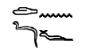

-
The Global Hash Index
This project is about a public system or infrastructure which enables human beings to proove their identity into one specific sequence of data that cannot be forged or tampered in any way. The system relies cryptographic hash functions which generate public key private key pairs to protect the information. The guiding principle behind this project is the simple question that birds do not have passports, then why do humans have one? -

The Unite language
This is another pet project which is an initiative for a universal language. The idea of having yet another language, when there are thousands of others, is unoriginal and not innovative at all. The question then arises, is it possible to create a language, that can take in any task, not specific to any implimentation or any application. The aim is to come up with a dynamic language, which when fully developed resembles the closest that a computer language could get to natural languages. -

The Antai Project
With the advent of AI, there is a huge amount of data being used for the supervised learning algorithms. This non-profit startup venture aims to provide data solutions that are inherently unlernable, sustainable and widely available. The current version of this project is to come up with a web service to be able to use user given data to check for fake news. This will then be incorporated into a broader spectrum of data intensive solutions.